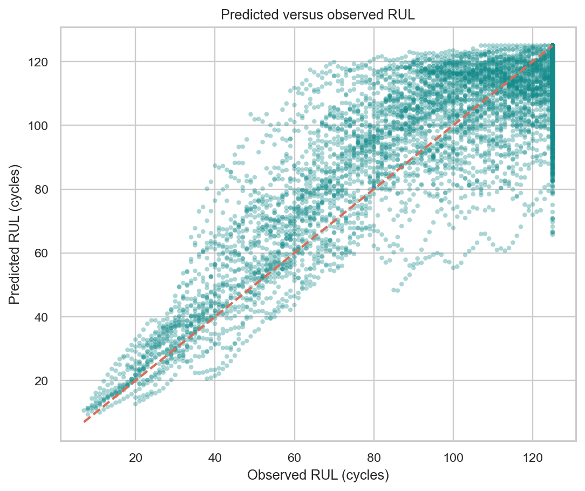

Ridge regression
First, mean, standard deviation, slope and last value from each window.
A research project on predictive maintenance
Predicting turbofan remaining useful life from simulated sensor histories.
NASA C-MAPSS / Ridge + LSTM / FD001 to FD004
The problem
Remaining useful life, or RUL, is the number of operating cycles until a simulated engine reaches failure.
Earlier estimates can support maintenance planning when their uncertainty and limits are understood.
A real training example: FD001 engine 1
29 cycles remaining at cycle 163
Data
Each row records one engine cycle.
21 sensors and 3 operating settings describe temperature, pressure and other simulated signals.
| Subset | Train engines | Test engines | Conditions | Fault modes |
|---|---|---|---|---|
| FD001 | 100 | 100 | 1 | 1 |
| FD002 | 260 | 259 | 6 | 1 |
| FD003 | 100 | 100 | 1 | 2 |
| FD004 | 249 | 248 | 6 | 2 |
Exploratory analysis
FD001, training engine 1: sensor 4
Operating cycle Sensor values shown in the dataset's raw scale
A sequence contains more information than a single reading.
The trace is sampled every four cycles for display. This is one simulated training engine, not a fleet average.
Preprocessing
30 consecutive cycles of sensor and setting values
RUL labels are capped at 125 cycles. Windows never cross engine boundaries.
Evaluation design
Use 80% of training engines for fitting and 20% for validation.
Remove constant channels and fit scaling on the training engines only.
Choose the lower validation MAE before scoring the official test set.
Overlapping windows from the same engine never appear in both fit and validation sets.
Model design
Three operating settings and retained sensors.
First, mean, standard deviation, slope and last value from each window.
64 and 32 recurrent units, dropout and a dense RUL output.
Choose the lower score before official test evaluation.
Training and evaluation
Adam training uses early stopping and restores the best validation weights.
MAE measures average absolute error. RMSE penalizes larger errors more heavily. Both are reported in cycles.
Benchmark results count all eligible overlapping test windows, not one prediction per engine.
Results
| Subset | Ridge val MAE | LSTM val MAE | Selected | Test MAE | Test RMSE |
|---|---|---|---|---|---|
| FD001 | 12.80 | 10.54 | LSTM | 10.31 | 13.94 |
| FD002 | 16.10 | 19.80 | Ridge | 15.39 | 19.36 |
| FD003 | 12.26 | 13.13 | Ridge | 11.25 | 15.57 |
| FD004 | 14.56 | 16.83 | Ridge | 13.08 | 18.00 |
For FD003, Ridge stays selected even though LSTM later scores lower on test. Selection never uses test labels.
Result visualization

10.31 cycles
FD001 selected LSTM test MAE
Points closer to the diagonal have smaller errors. The cap creates the vertical band at 125 cycles.
Interpretability
10 components
capture 95.18% of retained-sensor variance.
-0.774
Sensor 11 versus capped training RUL.
PCA and correlation are descriptive. They do not establish causality or explain an individual LSTM prediction.
Uncertainty
Validation residuals set a split-conformal interval around the selected model's prediction.
The nominal target is 95% coverage. Test-window coverage is measured after calibration.
Overlapping windows are dependent. Coverage on future or shifted data is not guaranteed.
Reliability
The severe result averages two synthetic corruption scenarios. It is a stress test, not a field failure rate.
Generalization
Train and calibrate on three subsets. Evaluate on the fourth.
These are related simulator domains. The table is a shift diagnostic, not external fleet validation.
| Held out | Ridge | LSTM |
|---|---|---|
| FD001 | 13.50 | 11.69 |
| FD002 | 15.48 | 13.60 |
| FD003 | 14.51 | 12.24 |
| FD004 | 17.79 | 20.08 |
Application insight
FD001 retrospective scenario
Urgent means at most 30 cycles of true RUL. Schedule at most 20 of 100 engines using the point estimate.
The Julia what-if engine uses held-out labels only for retrospective scoring. No cost or repair outcomes are modeled.
Engineering optimization
3.46×
FD002 K-Means speedup in a local C++ benchmark.
PCA was slower in the same comparison.
scikit-learn: 7.61 ms
C++: 15.12 ms
These are sensor-analysis kernels, not LSTM inference speedups.
Application and delivery
Compare subsets, inspect reliability and explore the study diagram.
Open dashboard ↗Explore data, model outputs and maintenance what-if scenarios.
Open Streamlit ↗The dashboard reads committed research snapshots. Live sensor or API integration is future work.
Limitations and next steps
Validate with independent operational engines and maintenance outcomes.
Evaluate sensor drift, missing data and uncertainty under real distribution shifts.
Study per-prediction explanations, streaming integration and model compression.
SHAP, live telemetry, pruning and quantization are not implemented in the current project.
Takeaway
The project combines leakage-aware evaluation, uncertainty, stress tests and accessible research tools.
References
Project results, methods and robustness protocols are in the repository documentation. The supplied studies predict turbine gas temperature on proprietary data. This deck describes adaptations to simulated C-MAPSS RUL.
Use the arrow keys, Page Up, Page Down, Home or End to move between slides.